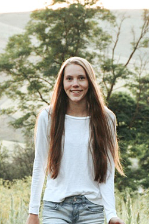

Target Audience
Description
Who: The main target audience of this site would be local men and women who love the outdoors and community focused programmes. A secondary target audience would be men and women who are visiting the area and want to know more about the area and what it has to offer.
Age: 18 - 70
Technology: Visiting from Mobile, Tablet and Desktop devices, with a higher percentage visiting from Mobile Devices. Visitors would be online at least 3 times a week.
Income: This would cover a range of income levels.
Motivation: Find out local weather forecasts for planning. Interact with their community. Find new places to visit. Join community groups
First Persona
James Johnson
Business Owner
Demographics and Education: 55 years old. Married. Has a Masters level education in Business and Management. Looking to retire in the next 10 years. Has 4 children and 8 grandchildren.
Goals and Movtivation for using the site: Wants to keep updated on the weather forecast for outdoor activities, as well as know about upcoming events.
Social: Active person who loves hiking. Enjoys outdoor activities spent with his family.
Technology: Always online during the week. Uses iPhone, iPad, Macbook and iMac. Enjoys taking a break from technology on the weekend.
Second Persona
Harper Anderson
Student
Demographics and Education: 20 years old. Second Year Student studying at a local University. Single. Did not grow up in Idaho.
Goals and Movtivation for using the site: Wants to know more about local and outdoor activities in the area, as well as connect and make new friends.
Social: Active person who loves hiking.
Technology: Always online doing her school work or chatting to friends and family. Uses Android phone and HP Laptop.
Five Scenarios
Purpose in visiting Website
- What is the Weather in Idaho tomorrow?
- Are there any local events happening in Idaho in the next week?
- What local places are there to visit in and around Idaho?
- Are there any hiking trails in Idaho?
- Can I join a local hiking group?